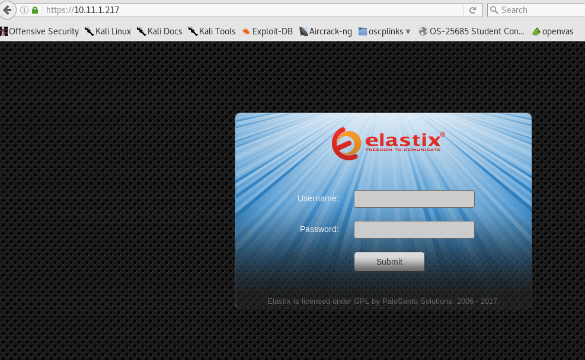

root@kali:~/gen/smtp# nc -nv 10.11.1.217 25
(UNKNOWN) [10.11.1.217] 25 (smtp) open
220 hotline.localdomain ESMTP Postfix
vrfy root
252 2.0.0 root
vrfy bob
550 5.1.1 <bob>: Recipient address rejected: User unknown in local recipient table
vrfy kevin
550 5.1.1 <kevin>: Recipient address rejected: User unknown in local recipient table
